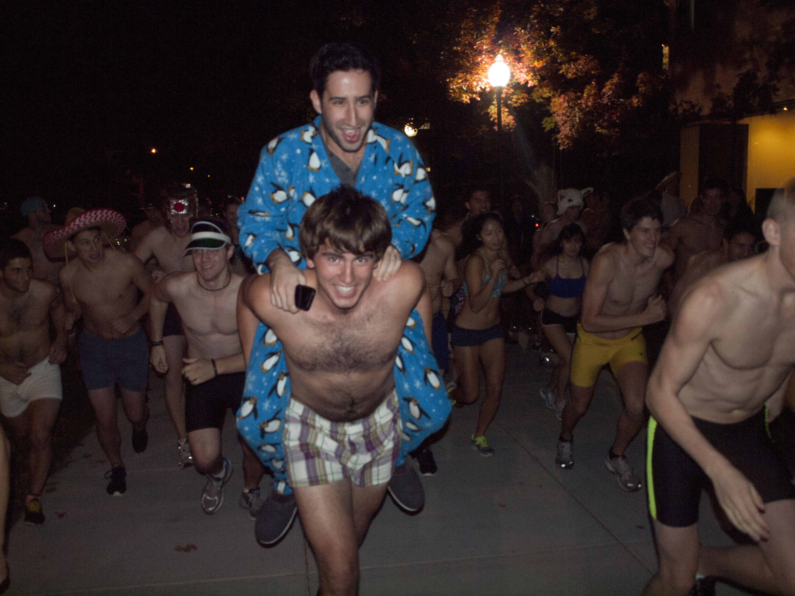

Running for charity! The Nearly Naked Nearly Mile will be held at the Kappa Sigma Fraternity located at 407 Memorial Drive in Cambridge. The event will be held on April 19th at 5pm. At 5:30pm, we’ll strip down and begin our run through campus. We ask that you arrive wearing clothes that you would like to donate to the American Red Cross. When the run begins, we’ll all strip down (nearly) naked, put all of our clothing donations in a big pile, and cavort through the heart of MIT’s campus, including a trip down the Infinite Corridor.
We’ve got plenty of rewards for your nearly naked run through campus. Food and drink will be generously provided by several local Cambridge restaurants. Live music will be provided by Kappa Sigma’s own DJ NoSlax and DJ Brody Jones. And if you want to thank our event organizers for their efforts, they’ll be hanging out in a dunk tank all night long.
Home Cause